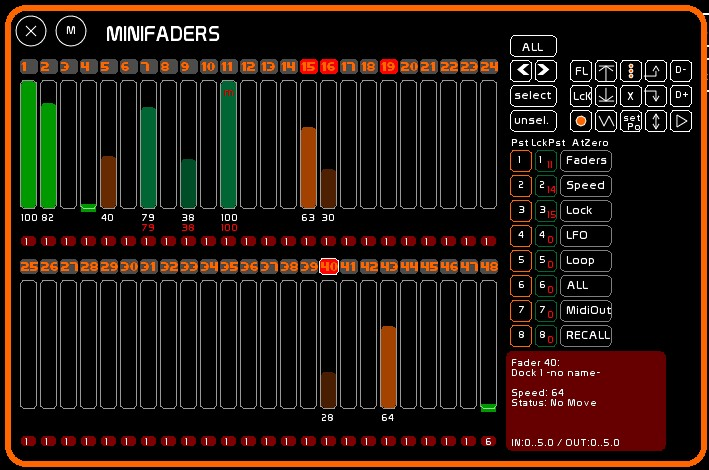
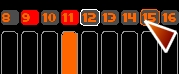
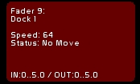
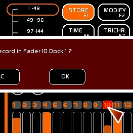
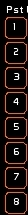
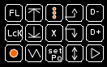
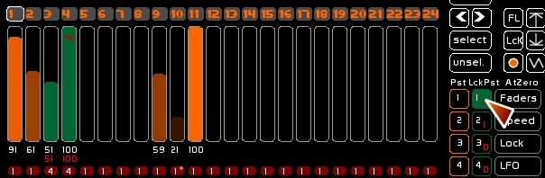
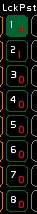

La fenêtre minifaders est une fenêtre permettant d'avoir une vue synthétique de l'état des 48 faders. Les 48 minifaders représentent donc les mêmes faders que l'espace Faders.
Pour les utilisateurs de versions antérieures (0.7.6 et précédentes): les AllAtZero et les Lock Presets intègrent cette fenêtre.
Pour accéder aux Minifaders, taper [Shift-F10].

Un certain nombre d'actions peuvent y être menées, à l'identique de l'espace Faders:
Le déclenchement d'actions est quant à lui différent. Il faut sélectionner un minifader pour pouvoir déclencher les actions suivantes:
Ce système de sélections de faders ouvre sur l'une des autres particularités de minifaders:
Le minifader se présente de la manière suivante:

Au survol de la case de sélection celle - ci est entourée en orange. Lorsqu'un minifader est sélectionné sa case est rouge. La position du dernier minifader sélectionné apparait entourée en blanc.
Un descriptif s'affiche à la manipulation ou la sélection d'un minifader, montrant le contenu du dock actif. Aparaissent notamment les informations de descriptif et de temps.

Comme pour les faders, vous pouvez enregistrer (F1), nettoyer(F4), mofiier (F2), reporter(F3), nommer (F5), donner un temps (F6) et affecter des contenus dynamiques, en clickant sur la case de sélection du minifader .
Le dock actif ( utilisé) sera affecté par l'opération.

Pour sélectionner un minifader, clicker sa case de sélection. Vous pouvez aussi vous déplacer via les flèches [<] [>] et utiliser les touches [Select] [Unselect] pour sélectionner / déselectionner; ou la touche [ALL] pour sélectionner les 48 faders. Ces 4 commandes sont affectables en midi.

En enclenchant [F1] vous pouvez enregistrer cette sélection dans le preset cliqué de minifaders. [F1] [F2] et [F4] fonctionnent avec les presets de minifaders.
Ensuite un appel de preset (1 à 8) restitue le seul jeu de minifaders correspondant à ce preset (c'est à dire sans cumul).

Lorsque l'on sélectionne un minifader, ou un groupe de minifaders par l'appel d'un des 8 presets, les différentes manipulations suivantes sur la sélection sont possibles:
| Flash | Up | All Dock Loop | Prev Dock | Dock - |
| Lock | Down | At Zero All | Next Dock | Dock + |
| Loop Dock | Saw | Stop Position | Aller-retour | Play du chaser embarqué |
Le All At Zero de ce menu est particulier, son action met tout à zéro dans les faders concernés : le type LFO, le niveau du Fader, la vitesse du LFO, les Loops et les modes spéciaux de LFO.

Vous pouvez enregistrer dans un Lock Preset l'état de lock des 48 faders.
Cet enregistrement et sa restitution ne prennent pas en compte la sélection des minifaders.

Les états de Lock sont aussi enregistrables dans 8 Lock Preset.
On peut rappeler ces prépas d'un simple click, ou via une touche midi.
Contrairement à leur première mouture, les fonctions All At Zero affectent désormais uniquement les minifaders sélectionnés.
Permet de mettre à zéro de manière sélective les 48 faders.
Lors de cette mise à zéro, un snapshot est fait de l'état de ces faders.
Ce qui permet de rappeler l'état avant mise à zéro par la commande [RECALL].
Cette fonction est prévue pour les concerts. Elle est cut, sans tempo.
Les 48 Faders sont mis à zéro.
Si des LFOs sont présents, sans boucle ( Loop), ils seront éteints, considérant que le mouvement est fini ( niveau = 0).
Les 48 accéléromètres sont remis à 64 ( vitesse normale).
Les 48 Faders sont débrayés du Lock.
Les LFOs des 48 Faders sont mis à zéro.
Toutes les boucles des 48 Faders sont déselectionnées.
Tout en même temps.
Le renvoi midi out des faders est désactivé sur les 48 faders.
Lors des actions [ALL AT ZERO] décrites ci dessus, une sauvegarde est faite en mémoire vive de l'état de ce que l' on va mettre à zéro. On rappelle alors l'état avant mise à zéro.